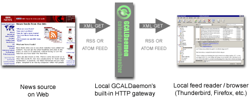
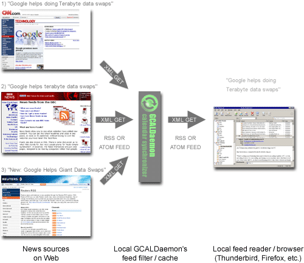
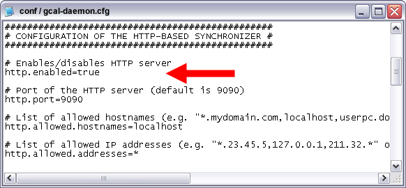
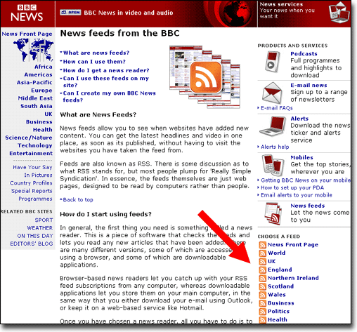
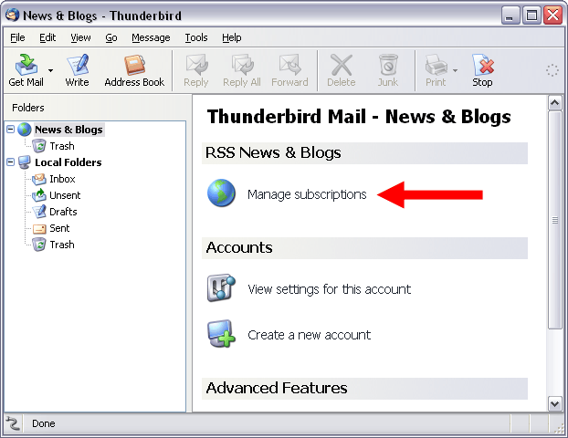
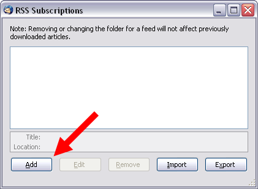
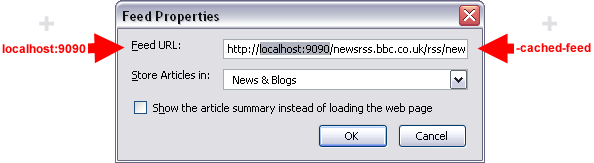
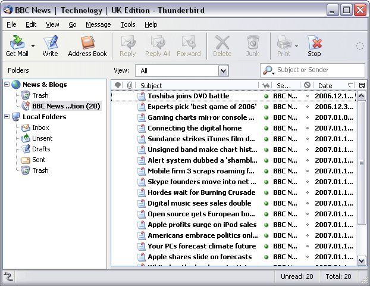
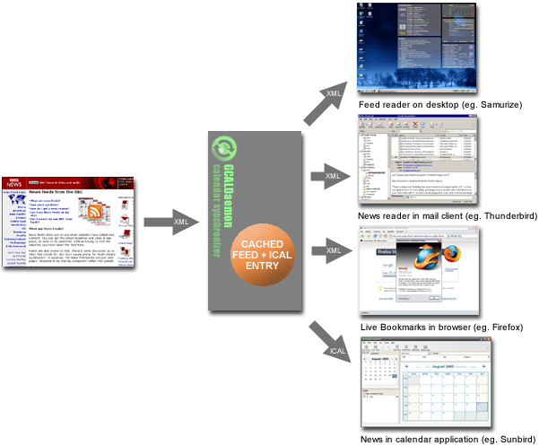
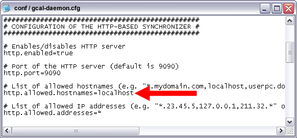

The most of feed readers, calendars and browsers all download RSS/ATOM feeds at startup.
GCALDaemon's feed cache can be very convenient both speeding up application startup
and also you can decrease your PC's network traffic.

Another advantage is that you can filter out duplicate events
by setting the 'feed.duplication.filter' property.

1) Install GCALDaemon (Java 1.5 required).
2) Edit the 'gcal-daemon.cfg' file with your text editor.
Set the 'http.enabled' and 'feed.enabled' properties to 'true'.

3) Launch GCALDaemon.
4) Copy the appropriate RSS/ATOM URL with your Web browser.

5) Launch Thunderbird. Click on the 'Manage subscriptions' icon.

6) Click on the 'Add' button.

7) Put the RSS/ATOM feed's URL into 'Feed URL' field.
Replace 'http://' prefix to 'http://localhost:9090/'.
Append '-cached-feed' postfix to the end of the URL.
Original feed URL:
http://newsrss.bbc.co.uk/rss/newsonline_uk_edition/technology/rss.xml
Cached feed URL:
http://localhost:9090/newsrss.bbc.co.uk/rss/newsonline_uk_edition/technology/rss.xml-cached-feed

8) Click on the 'OK' button - setup finished.

9) You can access simultaneously one cached RSS/ATOM resource from various news reader applications.
You can filter out duplicate events by setting the 'feed.duplication.filter' percentaged limit
(50% = very sensitive filtration, 100% = filter disabled, recommended value is about 70%):
feed.duplication.filter=70%

1) For the higher security set the 'http.allowed.hostnames' configuration option's value to 'localhost' (in 'conf/gcal-daemon.cfg').

2) Optionally start the 'service-install.bat' to install GCALDaemon as Windows service
(on UNIX-compatible systems put GCALDaemon into 'init', 'launchd' or 'rc' script).
Before uninstall GCALDaemon, you must stop and uninstall this service
(with 'service-stop.bat' and 'service-uninstall.bat').
Please note, this is the last step in the setup/configuration process,
do not install the service while GCALDaemon is not running properly.
On Vista, it's not enough to be in the Administrators group,
you need to either be actually logged on as the Administrator.
A) In START menu click on the 'Command Prompt'
B) Right click on it and select 'Properties'
C) In 'Shortcut' tab, click on 'Advanced...'
D) Tick the 'Run as Administrator'
E) Run 'Command Prompt' and in click 'Continue' in 'User Account Control' box
F) Now you are in administrator mode
G) Type 'cd [gcaldaemon installation directory]\bin'
H) Execute 'service-install.bat'
I) Execute 'service-start.bat'